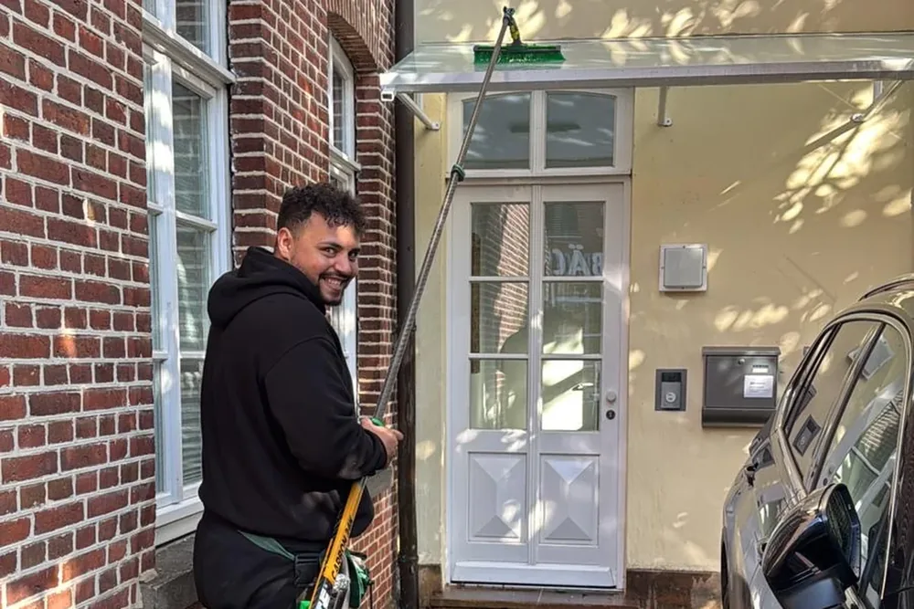

Für Hausverwaltungen
Wohnanlagen und Treppenhäuser
Feste Kraft je Haus, fester Turnus, eine Rechnung für alle Objekte. Sie bekommen die Beschwerden nicht mehr auf den Tisch.
- Treppenhausreinigung
- Sanitär und Gemeinschaftsräume
- Außenanlagen
- Glasflächen im Treppenhaus